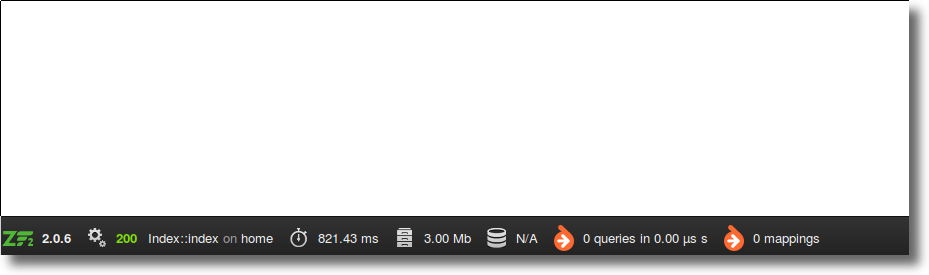
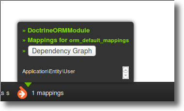
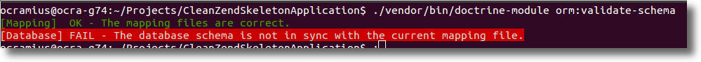
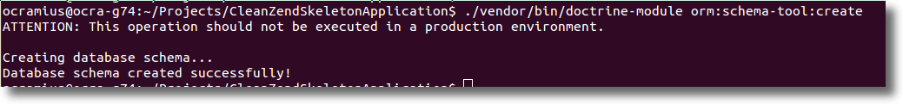
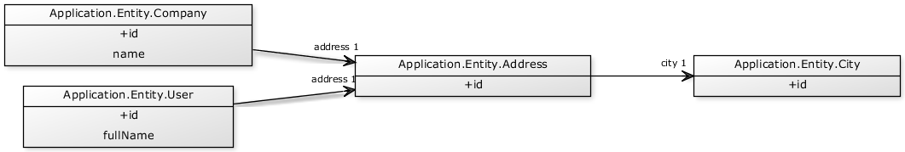

Doctrine 2 & ZF2
+

Note: these slides are combined with a webcast that you can find on this page .
Marco Pivetta
Doctrine core team
Zf2 contributor
Modules developer time waster
Main Libraries
BjyAuthorize, AssetManager, ZeffMu, ZfrRest, OcraDiCompiler, OcraServiceManager, OcraCachedViewResolver, DoctrineModule, DoctrineORMModule, DoctrineMongoODMModule, VersionEyeModule
Doctrine Project
An incubator for persistence-oriented libraries


What is Doctrine ORM?
Doctrine ORM is an Object Relational Mapper
It is inspired by Hibernate and the JPA (JSR-317)
It is based on a DBAL (DataBase Abstraction Layer)
Allows developers to save and load POPO with SQL
An ORM gives you the impression that you are working with a "virtual" database (graph) composed by objects
Simply put:
Forget the database!
The Modules!
DoctrineModule
basic common functionality
DoctrineORMModule
ORM/SQL Connection
DoctrineMongoODMModule
ODM/MongoDB Connection
Installation!
php composer.phar require doctrine/doctrine-orm-module:0.7.*php composer.phar require zendframework/zend-developer-tools:dev-mastercp vendor/zendframework/zend-developer-tools/config/zenddevelopertools.local.php.dist config/autoload/zdt.local.phpEnabling the modules
config/application.config.phpreturn array(
'modules' => array(
'ZendDeveloperTools',
'DoctrineModule',
'DoctrineORMModule',
'Application',
),
// [...]
);
You should see:

Write your first entity
module/Application/src/Application/Entity/Usernamespace Application\Entity;
use Doctrine\ORM\Mapping as ORM;
/** @ORM\Entity */
class User {
/**
* @ORM\Id
* @ORM\GeneratedValue(strategy="AUTO")
* @ORM\Column(type="integer")
*/
protected $id;
/** @ORM\Column(type="string") */
protected $fullName;
// getters/setters
}Configure mappings
module/Application/config/module.config.phpreturn array(
'doctrine' => array(
'driver' => array(
'application_entities' => array(
'class' =>'Doctrine\ORM\Mapping\Driver\AnnotationDriver',
'cache' => 'array',
'paths' => array(__DIR__ . '/../src/Application/Entity')
),
'orm_default' => array(
'drivers' => array(
'Application\Entity' => 'application_entities'
)
))), // [...]You should see:
Configure the connection
config/autoload/doctrine.local.phpreturn array(
'doctrine' => array(
'connection' => array(
'orm_default' => array(
'driverClass' =>'Doctrine\DBAL\Driver\PDOMySql\Driver',
'params' => array(
'host' => 'localhost',
'port' => '3306',
'user' => 'username',
'password' => 'password',
'dbname' => 'database',
)))));Validate mappings
./vendor/bin/doctrine-module orm:validate-schema
Generate the database
./vendor/bin/doctrine-module orm:schema-tool:create
Test it!
module/Application/src/Application/Controller/IndexController.phppublic function indexAction() {
$objectManager = $this
->getServiceLocator()
->get('Doctrine\ORM\EntityManager');
$user = new \Application\Entity\User();
$user->setFullName('Marco Pivetta');
$objectManager->persist($user);
$objectManager->flush();
die(var_dump($user->getId())); // yes, I'm lazy
}Examples
Persisting an object
$user = new User();
$user->setFullName('Marco Pivetta');
$objectManager->persist($user); // $user is now "managed"
$objectManager->flush(); // commit changes to db
var_dump($user->getId()); // 1Persisting multiple objects
$user1 = new User();
$user1->setFullName('Marco Pivetta');
$objectManager->persist($user1);
$user2 = new User();
$user2->setFullName('Michaël Gallego');
$objectManager->persist($user2);
$user3 = new User();
$user3->setFullName('Kyle Spraggs');
$objectManager->persist($user3);
$objectManager->flush();Retrieving an object
$user1 = $objectManager->find('Application\Entity\User', 1);
var_dump($user1->getFullName()); // Marco Pivetta
$user2 = $objectManager
->getRepository('Application\Entity\User')
->findOneBy(array('fullName' => 'Michaël Gallego'));
var_dump($user2->getFullName()); // Michaël GallegoUpdating an object
$user = $objectManager->find('Application\Entity\User', 1);
$user->setFullName('Guilherme Blanco');
$objectManager->flush();Deleting an object
$user = $objectManager->find('Application\Entity\User', 1);
$objectManager->remove($user);
$objectManager->flush();Associations - User
/** @ORM\Entity */
class User {
// like before
/** @ORM\ManyToOne(targetEntity="Address") */
protected $address;
/** @ORM\ManyToMany(targetEntity="Project") */
protected $projects;
public function __construct()
{
$this->projects = new ArrayCollection();
}
// getters/setters
}Associations - Address
/** @ORM\Entity */
class Address {
/* @ORM\Id @ORM\Column(type="integer") @ORM\GeneratedValue(strategy="AUTO") */
protected $id;
/** @ORM\Column(type="string") */
protected $city;
/** @ORM\Column(type="string") */
protected $country;
// getters/setters etc.
}Associations - Projects
/** @ORM\Entity */
class Project {
/* @ORM\Id @ORM\Column(type="integer") @ORM\GeneratedValue(strategy="AUTO") */
protected $id;
/** @ORM\Column(type="string") */
protected $name;
// getters/setters
}Associations - Persisting associations
$user = new User();
$user->setFullName('Marco Pivetta');
$objectManager->persist($user);
$address = new Address();
$address->setCity('Frankfurt')
$address->setCountry('Germany');
$objectManager->persist($address);
$project = new Project();
$project->setName('Doctrine ORM');
$objectManager->persist($project);
$user->setAddress($address);
$user->getProjects()->add($project);
$objectManager->flush();Associations - Retrieving associations
$user = $objectManager->find('Application\Entity\User', 1);
var_dump($user->getAddress()->getCity()); // Frankfurt
var_dump($user->getProjects()->first()->getName()) // Doctrine ORMMore tutorials at http://marco-pivetta.com/doctrine2-orm-tutorial
DoctrineModule goodies
EER UML model
See what your entities look like in a graph:

Paginator Adapter
use Doctrine\Common\Collections\ArrayCollection;
use DoctrineModule\Paginator\Adapter\Collection as Adapter;
use Zend\Paginator\Paginator;
// Create a Doctrine Collection
$collection = new ArrayCollection(range(1, 101));
// Create the paginator itself
$paginator = new Paginator(new Adapter($collection));
$paginator
->setCurrentPageNumber(1)
->setItemCountPerPage(5);Paginator Adapter (ORM)
use DoctrineORMModule\Paginator\Adapter\DoctrinePaginator;
use Doctrine\ORM\Tools\Pagination\Paginator as ORMPaginator;
use Zend\Paginator\Paginator;
// Create a Doctrine Collection
$query = $em->createQuery('SELECT f FROM Foo f JOIN f.bar b');
// Create the paginator itself
$paginator = new Paginator(
new DoctrinePaginator(new ORMPaginator($query))
);
$paginator
->setCurrentPageNumber(1)
->setItemCountPerPage(5);Object-Exists Validator
$repository = $objectManager
->getRepository('Application\Entity\User');
$validator = new \DoctrineModule\Validator\ObjectExists(array(
'object_repository' => $repository,
'fields' => array('email')
));
var_dump($validator->isValid('test@example.com'));
var_dump($validator->isValid(array(
'email' => 'test@example.com'
)));Cache adapters
$zendCache = new \Zend\Cache\Storage\Adapter\Memory();
$cache = new \DoctrineModule\Cache\ZendStorageCache($zendCache);$doctrineCache = new \Doctrine\Common\Cache\ArrayCache();
$options = new \Zend\Cache\Storage\Adapter\AdapterOptions();
$cache = new \DoctrineModule\Cache\DoctrineCacheStorage(
$options,
$doctrineCache
);Hydrator
use DoctrineModule\Stdlib\Hydrator\DoctrineObject;
$hydrator = new DoctrineObject(
$objectManager,
'Application\Entity\City'
);
$city = new City();
$data = array('name' => 'Frankfurt');
$city = $hydrator->hydrate($data, $city);
echo $city->getName(); // prints "Frankfurt"
$dataArray = $hydrator->extract($city);
echo $dataArray['name']; // prints "Frankfurt"Hydrator (2)
use DoctrineModule\Stdlib\Hydrator\DoctrineObject;
$hydrator = new DoctrineObject(
$objectManager,
'Application\Entity\City'
);
$city = new City();
$data = array('country' => 123);
$city = $hydrator->hydrate($data, $city);
var_dump($city->getCountry());
// prints class Country#1 (1) {
// protected $name => string(5) "Germany"
// }Form Element
$form->add(array(
'type' => 'DoctrineModule\Form\Element\ObjectSelect',
'name' => 'user',
'options' => array(
'object_manager' => $objectManager,
'target_class' => 'Module\Entity\User',
'property' => 'fullName',
'is_method' => true,
'find_method' => array(
'name' => 'findBy',
'params' => array(
'criteria' => array('active' => 1),
'orderBy' => array('lastName' => 'ASC'),
),
),
),
));More stuff!
Everything works with MongoDB ODM too!
CouchDB ODM/PHPCR ODM/OrientDB ODM
Good Practices
Keep Entities simple
Think of entities as value-objects
Don't add logic to entities (hard to change later!)
Keep entities aware only of themselves + relations
Use doctrine/common API
If you stick with using only doctrine/common API, users of your modules can switch between ORM/ MongoDB ODM/CouchDB ODM/ PHPCR ODM/OrientDB ODM
Use doctrine/common API
Prefer
Doctrine\Common\Persistence\ObjectManagerover
Doctrine\ORM\EntityManagerUse doctrine/common API
Prefer
Doctrine\Common\Persistence\ObjectRepositoryover
Doctrine\ORM\EntityRepositoryUse collections extensively
Doctrine comes with a powerful collections API
OOP API for array-like data structures
Use the Criteria API
Collections provide a Criteria API
Allows you to filter virtually any kind of data structure
Criteria API example
use Doctrine\Common\Collections\Criteria;
use Doctrine\Common\Collections\ArrayCollection;
$collection = new ArrayCollection(array($user1, $user2, $user3));
$criteria = new Criteria();
$criteria->andWhere(
$criteria->expr()->gt(
'lastLogin',
new \DateTime('-1 day')
)
);
$recentVisitors = $collection->matching($criteria);$recentVisitors = $em
->getRepository('Application\Entity\Users')
->matching($criteria);Criteria API advantages
Works in ORM Repositories, Collections, etc...
Abstracts the problem of "searching"
Same criteria for different storages (ORM, ODM, Memory, ElasticSearch, cache...)
Allows you to define your own RecentUsersCriteria or InactiveUsersCriteria...
Inject the Object Manager
If you fetch the entity manager from within your services, replacing it will become very hard: Inject it instead!
Inject the Object Manager
'factories' => array(
'my_service' => function ($sl) {
$objectManager = $sl->get('Doctrine\ORM\EntityManager');
return new MyService($objectManager);
}
),class MyService
{
public function __construct(ObjectManager $objectManager)
{
// [...]
}
}Keep Object Manager out of Controllers
Don't use persistence to solve application problems
Filtering data when saved to DB
Validating data when saved to DB
Saving files when records are saved to DB
Using DB-level errors to check input validity
Keep your object graph consistent
An ObjectManager works under the assumption that managed objects are valid!
Assign values to your entities only when data is valid!
Questions?
Fork it!
You can find these slides on GitHub at https://github.com/Ocramius/doctrine-orm-zf2-tutorial